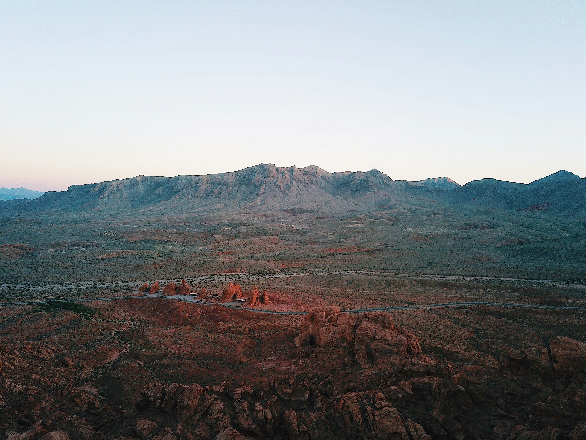
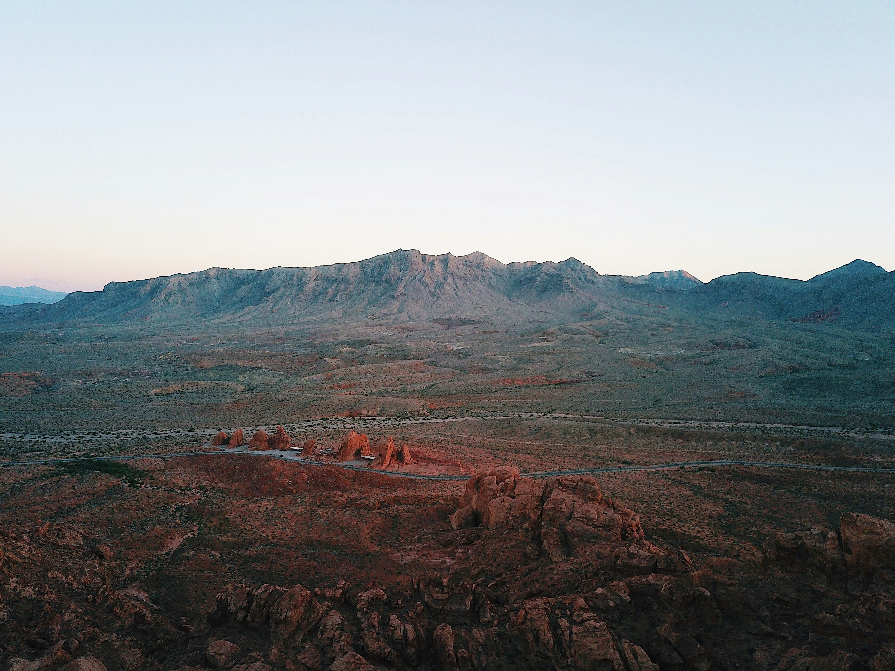

La Quota Comprende
- Volo di andata e ritorno
- Noleggio auto per tutta la durata del viaggio
- Alloggio (ostelli, motel e hotel selezionati)
- Carburante per gli spostamenti
- America the Beautiful Pass (accesso ai parchi nazionali)
- Tutte le tasse e le imposte relative a voli, noleggio auto e alloggi
La Quota Non Comprende
- Assicurazione sanitaria e viaggio
- Cibo e bevande
- Bevande alcoliche
- Eventuali acquisti personali
- Attività extra
- Ciò che non è espressamente scritto in "La quota comprende"
Lasciati ispirare dalle immagini


 
